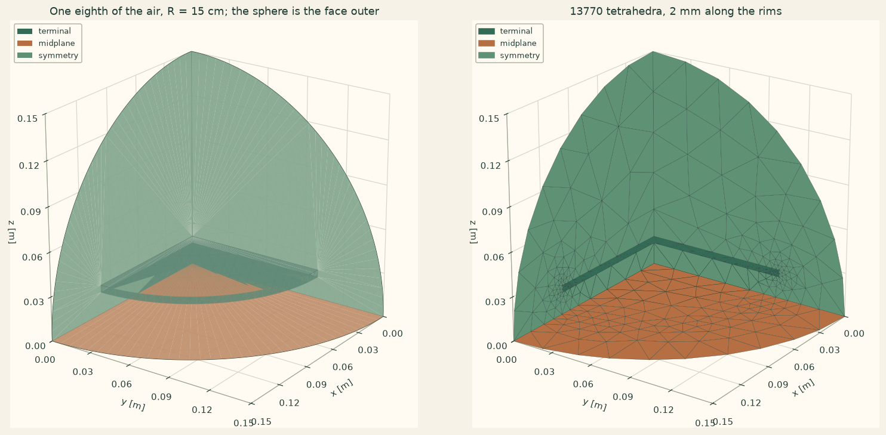

Docs › Examples › Fringing fields of a thick-plate capacitor
Electrostatics · 3D
Fringing fields of a thick-plate capacitor
Two thick metal discs in a spherical air domain: how the fringing field raises the capacitance and how the size of the air domain biases the result.
Run locally with OneSimulation. The example downloads are free. Running them requires an activated runtime. The current pilot runs on macOS on Apple Silicon with CPython 3.13. Installation and activation · View pilot plans. Scope of the reference checks.

What it computes
The plates and five air spheres are read from STEP files with named faces. OneSimulation solves the 3D electrostatic potential with quadratic elements on tetrahedra, sweeps the air-sphere radius with insulating and floating outer boundaries, and takes the capacitance from the terminal charge. The script that builds the STEP files comes with the notebook.
What it checks
The domain- and mesh-corrected capacitance agrees with an independent boundary-integral solution (14.105 pF) to 0.02 % to 0.04 % for spheres of 21 cm and more, and the domain error follows the dipole-image law within the scatter of the mesh.
Geometry
The notebook starts at the import of the CAD files fringing_field_capacitor.step, fringing_field_capacitor_21cm.step, fringing_field_capacitor_27cm.step, fringing_field_capacitor_33cm.step, fringing_field_capacitor_39cm.step: STEP (AP242), readable by any CAD program, with the names of the faces that the boundary conditions use. Put them next to the notebook.

The geometry script
The script fringing_field_capacitor_geometry.py builds the geometry with the CAD objects of OneSimulation and writes the files. Change a dimension there, run it, and run the notebook again.
"""Geometry of the OneSimulation example "Fringing fields and the capacitance of a disc capacitor".
Builds one eighth of the air around a capacitor of two metal discs (radius 10 cm, thickness 5 mm,
gap 3 cm) with the CAD objects of OneSimulation: the part of an air sphere with x, y, z >= 0, with
the upper disc removed. The mid plane z = 0 replaces the lower disc. One file is written for every
radius of the air sphere: fringing_field_capacitor.step (15 cm) and
fringing_field_capacitor_21cm.step to fringing_field_capacitor_39cm.step. Every file names the
face groups terminal (the disc), midplane, symmetry and outer (the sphere).
"""
from onesim.cad.d3 import Box, Cylinder, Sphere
disc_radius, thickness, gap = 0.10, 0.005, 0.03
for radius in (0.15, 0.21, 0.27, 0.33, 0.39):
air = Sphere(radius=radius) & Box(length=radius, width=radius, height=radius).named(
"cut"
)
air = air - Cylinder(
radius=disc_radius, length=thickness, origin=(0.0, 0.0, gap / 2)
).named("disc")
faces = air.boundaries
air = air.grouped(
terminal=faces.disc,
midplane=faces["cut.z_min"],
symmetry=faces["cut.x_min"] | faces["cut.y_min"],
outer=faces.surface,
)
air.save(
"fringing_field_capacitor.step"
if radius == 0.15
else f"fringing_field_capacitor_{100 * radius:.0f}cm.step"
)The notebook
The complete notebook, cell by cell. Run it to produce the figures and the comparison printout.
A parallel-plate capacitor of two metal discs (radius \(a=10\) cm, thickness \(t=5\) mm, gap \(d=3\) cm) stands in air. The upper disc is held at \(V_0=1\) V, the lower one is grounded. The electric field is not confined to the gap: it bulges out at the plate edges (fringing) and reaches around to the outer faces of the discs, which therefore carry charge as well. The capacitance is far larger than the ideal plate value \(\varepsilon_0\pi a^2/d=9.27\) pF.
A computer model has to cut the unbounded air off somewhere. Here the air is a sphere of radius \(R\) around the capacitor, and two conditions on its surface are compared:
- insulating surface, \(\mathbf D\cdot\mathbf n=0\): field lines are forced to stay inside, which lowers the capacitance;
- floating conductor, an equipotential surface without net charge: field lines end on it, which raises the capacitance. By the antisymmetry of the arrangement the floating sphere takes the mid potential \(V_0/2\).
Both values approach the free-space capacitance as \(R\) grows. Far away the capacitor looks like a dipole, and the image of a dipole in a sphere gives the insulating surface twice the error of the conducting one, with opposite sign: \(C_\mathrm{ins}\approx C_\infty-2k/R^3\) and \(C_\mathrm{flo}\approx C_\infty+k/R^3\). So \((C_\mathrm{ins}+2C_\mathrm{flo})/3\) removes the leading domain error.
The air comes from CAD files, one for every radius \(R=15,21,27,33,39\) cm: fringing_field_capacitor.step and fringing_field_capacitor_21cm.step to ..._39cm.step, written by fringing_field_capacitor_geometry.py with the CAD objects of OneSimulation. Each holds one eighth of the sphere with the upper disc cut out and names four face groups:
| faces | condition | |---|---| | terminal: the surface of the upper disc | \(V=V_0\) | | midplane: \(z=0\) | \(V=V_0/2\) (antisymmetry; the grounded disc is the mirror image) | | symmetry: the cut planes \(x=0\) and \(y=0\) | \(\mathbf D\cdot\mathbf n=0\) | | outer: the sphere | \(\mathbf D\cdot\mathbf n=0\) or \(V=V_0/2\) |
Reference. The free-space capacitance of exactly these thick discs is \(C_\infty=14.10536\) pF. It follows from the axisymmetric boundary-integral equation for the surface charge on the disc contour (ring potentials with complete elliptic integrals; E. R. Love, Q. J. Mech. Appl. Math. 2, 1949), solved by panel collocation to seven digits. Kirchhoff's formula for thin discs, \(C_\mathrm K=\varepsilon_0\pi a^2/d+\varepsilon_0 a\,[\ln(16\pi a/d)-1]\), shows the size of the fringing contribution.
import numpy as np
from onesim.cad.exchange import load
from onesim.materials import VacuumPermittivity
from onesim.meshing import LocalRefinement, TetrahedralMesher
from onesim.numerics import Numerics
from onesim.numerics.fem import FiniteElement, Lagrange
from onesim.numerics.linear import SparseDirect
from onesim.physics.electrostatics import (
FixedPotential,
PoissonEquation,
ZeroNormalElectricDisplacement,
)
from onesim.results.comparisons import convergence
from onesim.simulation import Problem, Simulation
from onesim.visualization import plots, theme
theme.set()Geometry and mesh
load returns each air region with its named faces. The field is singular along the two rims of the disc, so the tetrahedra are small there: 2 mm along the rim edges for the study of the sphere radius, and 4, 2 and 1 mm on the smallest sphere for the mesh study. The elements are second-order Lagrange elements on straight tetrahedra.
disc_radius, thickness, gap, voltage = 0.10, 0.005, 0.03, 1.0
radii = (0.15, 0.21, 0.27, 0.33, 0.39)
air = {
R: load(
"fringing_field_capacitor.step"
if R == radii[0]
else f"fringing_field_capacitor_{100 * R:.0f}cm.step"
)
for R in radii
}
rims = {
R: part.select(
edges=lambda edge: edge.kind != "line"
and gap / 2 - 1e-6 < edge.midpoint[2] < gap / 2 + thickness + 1e-6
)
for R, part in air.items()
}
levels = [(radii[0], 0.004), (radii[0], 0.001)] + [(R, 0.002) for R in radii]
meshes = {
(R, size): TetrahedralMesher(
target_size=0.03,
refinements=(
LocalRefinement(region=air[R].boundaries.terminal, target_size=4 * size),
LocalRefinement(region=rims[R], target_size=size),
),
).generate(air[R])
for R, size in levels
}
view = plots.Camera(elevation=22, azimuth=35)
fig = plots.figure(1, 2, size=(14, 6.5))
plots.geometry(
air[radii[0]],
selection={
name: air[radii[0]].boundaries[name]
for name in ("terminal", "midplane", "symmetry")
},
labels=False,
camera=view,
title="One eighth of the air, R = 15 cm; the sphere is the face outer",
ax=fig[0],
)
plots.mesh(
meshes[radii[0], 0.002],
groups=("terminal", "midplane", "symmetry"),
camera=view,
title=f"{meshes[radii[0], 0.002].cell_count} tetrahedra, 2 mm along the rims",
ax=fig[1],
)
plots.show()Model
Every mesh is solved with both conditions on the sphere. The charge of the upper disc is the reaction of the potential on the terminal faces; the eighth holds a quarter of that disc.
numerics = Numerics(
spatial=FiniteElement(element=Lagrange(order=2)), linear_solver=SparseDirect()
)
capacitance, potential = {}, {}
for (R, size), mesh in meshes.items():
faces = air[R].boundaries
model = PoissonEquation(domain=air[R].volume, permittivity=VacuumPermittivity())
outer = {
"insulating": ZeroNormalElectricDisplacement(
boundary=faces.outer, physics=model
),
"floating": FixedPotential(
boundary=faces.outer, physics=model, value=voltage / 2
),
}
for name, condition in outer.items():
problem = Problem(
name="Disc capacitor in an air sphere",
geometry=air[R],
physics=(model,),
boundary_conditions=(
FixedPotential(boundary=faces.terminal, physics=model, value=voltage),
FixedPotential(
boundary=faces.midplane, physics=model, value=voltage / 2
),
ZeroNormalElectricDisplacement(boundary=faces.symmetry, physics=model),
condition,
),
)
potential[R, size, name] = (
Simulation(problem=problem, mesh=mesh, numerics=numerics)
.solve_stationary()
.field(model.potential)
)
capacitance[R, size, name] = (
4 * potential[R, size, name].reaction(faces.terminal) / voltage
)Comparison with the reference
The mesh study on the smallest sphere gives the discretisation error of the 2 mm meshes; it arises at the rims and is taken as the same for every sphere. The weighted mean of the two outer conditions, minus that error, is compared with the free-space reference.
permittivity = float(VacuumPermittivity().evaluate())
reference = 14.10536e-12
ideal = permittivity * np.pi * disc_radius**2 / gap
kirchhoff = ideal + permittivity * disc_radius * (
np.log(16 * np.pi * disc_radius / gap) - 1
)
sizes = (0.004, 0.002, 0.001)
study = convergence([capacitance[radii[0], size, "floating"] for size in sizes], sizes)
mesh_error = capacitance[radii[0], 0.002, "floating"] - study.extrapolated
weighted = {
R: (capacitance[R, 0.002, "insulating"] + 2 * capacitance[R, 0.002, "floating"]) / 3
for R in radii
}
print("mesh study, R = 15 cm, floating sphere")
for size in sizes:
print(
f" {1e3 * size:.0f} mm along the rims: {meshes[radii[0], size].cell_count:6d} tetrahedra, C = {1e12 * capacitance[radii[0], size, 'floating']:.4f} pF"
)
print(
f" observed order {study.order:.2f}, extrapolated {1e12 * study.extrapolated:.4f} pF, error of the 2 mm mesh {1e12 * mesh_error:+.4f} pF"
)
print(
f"\nfree-space reference {1e12 * reference:.4f} pF; ideal plates {1e12 * ideal:.4f} pF ({100 * (ideal / reference - 1):+.1f} %); "
f"Kirchhoff, thin discs {1e12 * kirchhoff:.4f} pF ({100 * (kirchhoff / reference - 1):+.1f} %)"
)
print(
" R [cm] insulating [pF] floating [pF] (ins + 2 flo)/3 [pF] minus mesh error [pF] deviation from the reference"
)
for R in radii:
print(
f" {100 * R:2.0f} {1e12 * capacitance[R, 0.002, 'insulating']:15.4f} {1e12 * capacitance[R, 0.002, 'floating']:15.4f}"
f" {1e12 * weighted[R]:22.4f} {1e12 * (weighted[R] - mesh_error):23.4f} {100 * ((weighted[R] - mesh_error) / reference - 1):+27.3f} %"
)
print(
"domain error times R^3, insulating / floating: "
+ ", ".join(
f"{(reference - capacitance[R, 0.002, 'insulating'] + mesh_error) / (capacitance[R, 0.002, 'floating'] - mesh_error - reference):.2f}"
for R in radii
)
+ " (dipole image: 2)"
)Figure
The potential in the section through the axis for the largest sphere with the floating surface (the computed eighth mirrored), the field strength at the rims, the capacitance against the sphere radius and the mesh study.
largest = potential[radii[-1], 0.002, "floating"]
section = air[radii[-1]].boundaries["cut.y_min"]
sweep = {
name: 1e12 * np.array([capacitance[R, 0.002, name] for R in radii])
for name in ("insulating", "floating")
}
fig = plots.figure(2, 2, size=(15, 12))
plots.surface(
largest,
boundary=section,
symmetry={"planes": [((1, 0, 0), (0, 0, 0))]},
limits=(voltage / 2, voltage),
contours=15,
subdivisions=2,
label="potential [V]",
title="Potential above the mid plane, R = 39 cm, floating sphere",
ax=fig[0],
)
plots.surface(
largest,
boundary=section,
limits=(voltage / 2, voltage),
contours=25,
subdivisions=3,
edges=True,
xlimits=(0.07, 0.13),
ylimits=(0.0, 0.045),
label="potential [V]",
title="Potential at the rim, with the mesh",
ax=fig[1],
)
plots.line(
100 * np.array(radii),
{
"insulating sphere": sweep["insulating"],
"floating sphere": sweep["floating"],
"(ins + 2 flo) / 3": 1e12 * np.array(list(weighted.values())),
},
hlines={"free space, boundary integral": 1e12 * reference},
markers=True,
xlabel="radius of the air sphere R [cm]",
ylabel="capacitance [pF]",
title="Capacitance against the size of the air region",
legend="lower right",
ax=fig[2],
)
plots.line(
[meshes[radii[0], size].cell_count for size in sizes],
{
"floating sphere": [
1e12 * capacitance[radii[0], size, "floating"] for size in sizes
]
},
hlines={"extrapolated": 1e12 * study.extrapolated},
markers=True,
scale="logx",
xlabel="tetrahedra in the eighth",
ylabel="capacitance [pF]",
title="Mesh study, R = 15 cm",
ax=fig[3],
)
plots.show()Going further
Change the discs in fringing_field_capacitor_geometry.py and write the STEP files again: thinner plates bring the capacitance towards the thin-disc value, a smaller gap towards Kirchhoff's formula. Drive each electrode in turn to obtain the capacitance matrix of an arrangement with several electrodes.